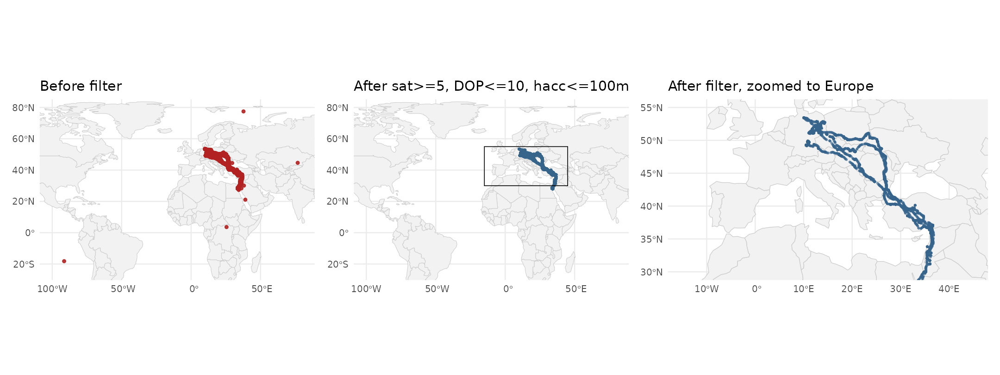
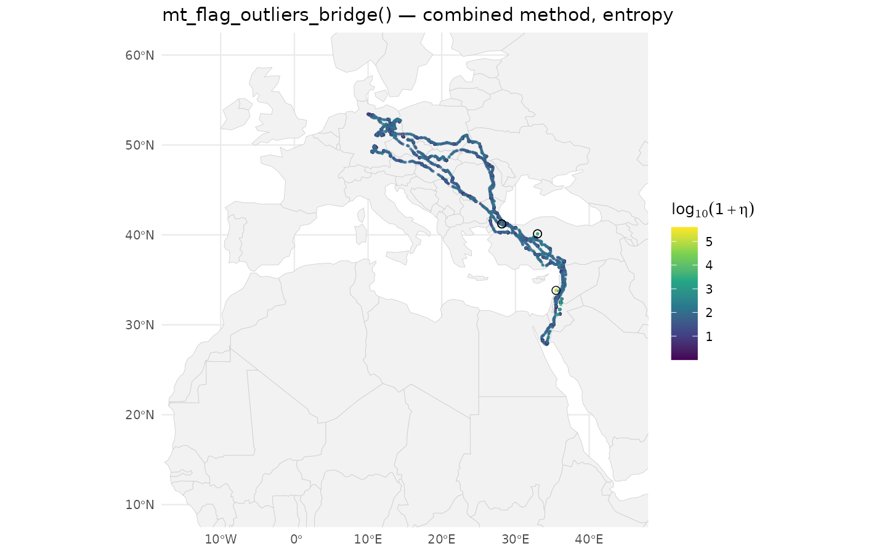
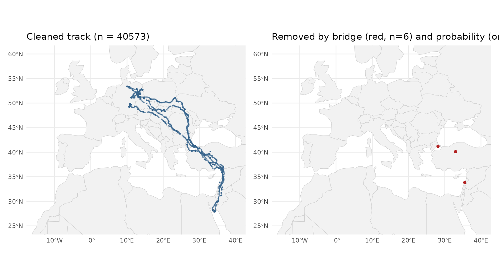

Cleaning a white stork GPS track: a narrated pipeline
Source:vignettes/OUTLIER_example_outlier_whitestork.Rmd
OUTLIER_example_outlier_whitestork.RmdThis vignette cleans a real, high-frequency GPS track from start to finish: Pettstadt1, a juvenile white stork (Ciconia ciconia) from the LifeTrack White Stork Bavaria study on Movebank (study ID 24442409). The full track has 49,263 fixes between June 2024 and April 2026, and it carries several kinds of error at once: huge “teleport” GPS failures, fixes taken with too few satellites, borderline movement oddities within Europe, and the usual download artefacts (empty geometries and duplicate timestamps).
We clean it in four stages, and each stage removes a distinct kind of error:
- Structural cleaning — drop empty geometries and duplicate timestamps.
-
GPS-quality pre-filter —
mt_filter_gps_quality()removes fixes with too few satellites, high dilution of precision (DOP), or poor e-obs horizontal accuracy. This is the first line of defence. -
Path-position check —
mt_flag_outliers_bridge()scores each fix against where its time-neighbours place it. It does not use a locally estimated variance, so a bad fix cannot hide itself; it catches the teleport-class errors that slip past the quality filter. -
Unusual-movement check —
mt_flag_outliers()scores each fix by how unlikely its step length, turning angle, and their gap-aware auto-differences are together. It catches fixes that sit in a plausible place but move in a way the animal never normally does.
Each stage is timed so you can see the computational cost next to the
ecological payoff. Stages 3 and 4 are also wrapped up in the one-call
mt_clean_track() entry-point, shown at the end.
Meet the bird
Pettstadt1 (AHH16, eObs tag 14053) is a white stork
nestling that fledged from a nest near Pettstadt, Bavaria. The tag was
deployed on 2024-06-13 by Wolfgang Fiedler (Max Planck Institute of
Animal Behavior). A representative subset of the track is bundled with
move2utils as
inst/extdata/Pettstadt1-14053.csv.gz. You can download the
full track live with:
library(move2)
movebank_store_credentials() # run once, interactive
x <- movebank_download_study(
study_id = 24442409,
sensor_type_id = "gps",
individual_local_identifier = "Pettstadt1 (AHH16, 14053)"
)
# x now carries the Movebank columns we need for quality filtering:
# gps_satellite_count, gps_dop, eobs_horizontal_accuracy_estimateBavarian white storks are partial migrants. We expect them in central Europe in summer and autumn, with some wintering in Iberia, North Africa, or the Sahel. Anything well outside that range is not the stork — it is a fix error.
Stage 1 — Structural cleaning
Empty geometries (a GPS timestamp written without a position lock) and duplicate timestamps (left behind when a Movebank download is resumed) have to go before anything downstream can work. Nothing clever here — just mechanical cleanup.
n0 <- nrow(raw)
x <- raw[!st_is_empty(raw), ]
n_empty <- n0 - nrow(x)
x <- mt_filter_unique(x, criterion = "first")
n_dup <- n0 - n_empty - nrow(x)
cat(sprintf("dropped %d empty + %d duplicate; kept %d\n",
n_empty, n_dup, nrow(x)))
#> dropped 872 empty + 152 duplicate; kept 48239Stage 2 — GPS-quality pre-filter
A GPS fix needs at least four satellites to exist at all, but fixes
right at that four-satellite edge have poor error geometry and often
land thousands of kilometres from the true position. The usual telemetry
rule of thumb is to keep sat >= 5. DOP and the
horizontal-accuracy estimate add independent evidence when those columns
are present.
xq <- mt_filter_gps_quality(x)A quick before/after map shows how much these low-quality fixes matter.
world <- ne_countries(scale = "small", returnclass = "sf")
before_sf <- x
after_sf <- xq
world_x <- c(-100, 80)
world_y <- c(-25, 80)
europe_x <- c(-15, 45)
europe_y <- c(30, 55)
p_before <- ggplot() +
geom_sf(data = world, fill = "grey95", colour = "grey80",
linewidth = 0.2) +
geom_sf(data = before_sf, size = 1, alpha = 0.9,
colour = "firebrick") +
coord_sf(xlim = world_x, ylim = world_y) +
labs(title = "Before filter", x = NULL, y = NULL) +
theme_minimal(base_size = 10)
p_after <- ggplot() +
geom_sf(data = world, fill = "grey95", colour = "grey80",
linewidth = 0.2) +
geom_sf(data = after_sf, size = 0.5, alpha = 0.8,
colour = "steelblue4") +
geom_rect(aes(xmin = europe_x[1], xmax = europe_x[2],
ymin = europe_y[1], ymax = europe_y[2]),
fill = NA, colour = "black", linewidth = 0.3) +
coord_sf(xlim = world_x, ylim = world_y) +
labs(title = "After sat>=5, DOP<=10, hacc<=100m",
x = NULL, y = NULL) +
theme_minimal(base_size = 10)
p_after_zoom <- ggplot() +
geom_sf(data = world, fill = "grey95", colour = "grey80",
linewidth = 0.25) +
geom_sf(data = after_sf, size =0.5, alpha = 0.5,
colour = "steelblue4") +
coord_sf(xlim = europe_x, ylim = europe_y) +
labs(title = "After filter, zoomed to Europe",
x = NULL, y = NULL) +
theme_minimal(base_size = 10)
if (requireNamespace("patchwork", quietly = TRUE)) {
patchwork::wrap_plots(p_before, p_after, p_after_zoom, ncol = 3)
} else {
print(p_before); print(p_after); print(p_after_zoom)
}
Coordinate extent before and after mt_filter_gps_quality(). Left: raw fixes span three continents because of a handful of low-satellite teleports. Middle: same extent after filtering, with the dots collapsed onto Europe. Right: the same kept fixes zoomed to the European flyway, the first view in which the track’s real shape is legible.
The extreme range collapses onto the expected European and Mediterranean envelope; the zoomed panel resolves the structure that the world-scale view squashes into dots, and it is the first view where you can actually read the track. The filter does most of its work on low-satellite fixes; DOP and the horizontal-accuracy estimate add smaller gains.
Stage 3 — Path-position check (bridge)
mt_flag_outliers_bridge() scores each fix by how far it
sits from the time-weighted average of its neighbours (a Brownian bridge
between them), scaled by the bridge width. The width depends only on the
timestamps, not on the positions, so a bad fix cannot widen its own
tolerance — it finds the geometric outliers that survive the quality
filter.
The default method = "combined" computes two scores in
one pass — the plain distance residual (dBBMM) and the across-track
residual (dBGB) — applies the threshold to each separately, and flags a
fix if either fires. On synthetic ground-truth tests this beats either
score alone.
x_utm <- st_transform(xq, 32632) # UTM 32N, central Europe
r_br <- mt_flag_outliers_bridge(x_utm,
threshold_type = "entropy",
iterations = 1,
plot = FALSE)
cat(sprintf("bridge flagged %d of %d fixes\n",
sum(r_br$is_outlier), nrow(r_br)))
#> bridge flagged 6 of 40579 fixesThe bridge_eta, bridge_eta_para, and
bridge_eta_perp columns hold the combined, along-track, and
across-track scores for every fix — handy for diagnosing the kind of
error later.
r_br_ll <- st_transform(r_br, 4326)
r_br_ll$log_eta <- log10(pmax(r_br_ll$bridge_eta, 1e-10) + 1)
ggplot() +
geom_sf(data = world, fill = "grey95", colour = "grey80",
linewidth = 0.15) +
geom_sf(data = r_br_ll, aes(colour = log_eta),
size = 0.3, alpha = 0.6) +
geom_sf(data = r_br_ll[r_br_ll$is_outlier, ],
shape = 1, colour = "black", size = 2.2, stroke = 0.4) +
scale_colour_viridis_c(option = "viridis",
name = expression(log[10](1 + eta))) +
coord_sf(xlim = c(-15, 45), ylim = c(10, 60)) +
labs(title = "mt_flag_outliers_bridge() — combined method, entropy",
x = NULL, y = NULL) +
theme_minimal(base_size = 10)
Bridge-residual score in UTM coordinates. Flagged fixes (black circles) sit where a point is spatially inconsistent with its neighbours given the local sampling rate.
Stage 4 — Unusual-movement check
mt_flag_outliers() complements the path-position check
by scoring each fix against the joint distribution of step length,
turning angle, and their gap-aware auto-differences. It catches fixes
whose movement (speeds, turns, accelerations) does not match the
animal’s usual behaviour, even when the point sits in a believable
place.
It is good practice to drop the bridge-flagged fixes first: they would otherwise distort the distribution the check builds from.
xp <- r_br[!r_br$is_outlier, ] # bridge-cleaned
xp <- st_transform(xp, 4326) # this check ignores the CRS
r_prob <- mt_flag_outliers(xp, threshold_type = "entropy",
iterations = 1, plot = FALSE)
cat(sprintf("probability flagged %d of %d fixes\n",
sum(r_prob$is_outlier), nrow(r_prob)))
#> probability flagged 0 of 40573 fixesCleaned track
The fixes flagged by the path-position and unusual-movement checks together make up the removed set. Plotting the kept track next to the removed fixes on a European extent shows what the pipeline caught.
## merge removal sources
quality_removed <- x[!seq_len(nrow(x)) %in%
which(seq_len(nrow(x)) %in%
match(st_geometry(xq), st_geometry(x))), ]
## simpler: track in/out per stage via row-count accounting in the
## diagnostic only (exact mapping not needed for the map)
kept <- r_prob[!r_prob$is_outlier, ]
p_kept <- ggplot() +
geom_sf(data = world, fill = "grey95", colour = "grey80",
linewidth = 0.2) +
geom_sf(data = kept, size = 0.2, alpha = 0.4,
colour = "steelblue4") +
coord_sf(xlim = c(-15, 40), ylim = c(25, 60)) +
labs(title = sprintf("Cleaned track (n = %d)", nrow(kept)),
x = NULL, y = NULL) +
theme_minimal(base_size = 10)
removed_bridge <- r_br[r_br$is_outlier, ]
removed_prob <- r_prob[r_prob$is_outlier, ]
p_removed <- ggplot() +
geom_sf(data = world, fill = "grey95", colour = "grey80",
linewidth = 0.2) +
geom_sf(data = st_transform(removed_bridge, 4326),
size = 1.2, colour = "firebrick") +
geom_sf(data = removed_prob,
size = 1.2, colour = "orange") +
coord_sf(xlim = c(-15, 40), ylim = c(25, 60)) +
labs(title = sprintf("Removed by bridge (red, n=%d) and probability (orange, n=%d)",
nrow(removed_bridge), nrow(removed_prob)),
x = NULL, y = NULL) +
theme_minimal(base_size = 10)
if (requireNamespace("patchwork", quietly = TRUE)) {
patchwork::wrap_plots(p_kept, p_removed, ncol = 2)
} else {
print(p_kept); print(p_removed)
}
Left: fixes kept after the full pipeline. Right: fixes removed by stages 2–4, coloured by the stage that caught them.
The one-call alternative — mt_clean_track()
The pipeline above narrates each check so you can see what is
happening and why. For routine cleaning, mt_clean_track()
runs all four checks behind a single call: it applies the path-position,
there-and-back (detour), unusual-movement, and speed checks, combines
them with the default consensus rule, removes groups of bad fixes that
form isolated blocks, and iterates until nothing new is flagged.
The default rule is consensus = "evidence_corroborated":
it weighs each check’s evidence on a common scale and flags a fix when
the combined evidence is positive and either at least
two checks agree or the there-and-back check alone is overwhelmingly
sure. You can pick a different rule via consensus = — the
earlier behaviour is "class_aware", and
"strict", "majority",
"speed_trusted", "weighted_evidence",
"any", and "custom" are also available (see
?mt_flag_consensus). Whichever rule you choose, the
error_class column — naming which kind of error caused each
flag — is always computed.
White storks have a known sustained-flight ceiling around 50 m/s. Supplying that as a physiological cap lets the speed check peel off any spoof- or teleport-class clusters cleanly before the other checks run on the survivors.
clean_one_call <- mt_clean_track(xq, v_max = 50, plot = FALSE)
cat(sprintf("mt_clean_track kept %d of %d fixes\n",
nrow(clean_one_call), nrow(xq)))
#> mt_clean_track kept 40155 of 40579 fixesThe kept set should be close to the union of the bridge and probability flags from the staged pipeline; the consensus rule and block expansion give it slightly different behaviour on edge cases. Use whichever style suits you — the staged version when you want to inspect each signal, the one-call version when you trust the defaults and want to move on.
Composition summary
tab <- data.frame(
stage = c("1. structural cleaning",
"2. GPS-quality filter",
"3. bridge (combined)",
"4. probability (entropy)"),
n_in = c(n0, nrow(x), nrow(xq), nrow(xp)),
n_out = c(nrow(x), nrow(xq), sum(!r_br$is_outlier),
sum(!r_prob$is_outlier))
)
tab$n_dropped <- tab$n_in - tab$n_out
print(tab, row.names = FALSE)
#> stage n_in n_out n_dropped
#> 1. structural cleaning 49263 48239 1024
#> 2. GPS-quality filter 48239 40579 7660
#> 3. bridge (combined) 40579 40573 6
#> 4. probability (entropy) 40573 40573 0Each stage handles a distinct kind of error, and each is cheap:
- Structural cleaning is O(n) and mechanical.
- The GPS-quality filter is O(n) and kills the most pathological fixes at source — often the difference between a usable and an unusable track.
- The bridge check is O(n) with a single neighbour scan.
- The unusual-movement check is O(n) with a fully vectorised density
lookup; a cap on the 2D turn/step histogram bin count keeps the
terraraster work linear in n even on heavy-tailed step distributions.
Notes on reproducibility
- The bundled CSV was made by filtering the Movebank download to a
stable subset of columns. All three GPS-quality columns
(
gps-satellite-count,gps-dop,eobs-horizontal-accuracy-estimate) are kept. - You can re-download the full Movebank study with
move2::movebank_download_study(24442409, individual_local_identifier = "Pettstadt1 (AHH16, 14053)")after runningmove2::movebank_store_credentials()once. - Study acknowledgement: LifeTrack White Stork Bavaria, data contributed by Wolfgang Fiedler and colleagues, Max Planck Institute of Animal Behavior.
Further reading
-
vignette("OUTLIER_1_getting_started", package = "move2utils")— the unifiedmt_clean_track()workflow and a brief tour of all four checks. -
vignette("OUTLIER_2_diagnose_clean_track", package = "move2utils")— the post-run health check. -
vignette("OUTLIER_3_state_conditional", package = "move2utils")— when the diagnostic flags two behaviours, the recipe for cleaning each behavioural state separately. -
vignette("OUTLIER_4_outlier_bridge", package = "move2utils")— the path-position check and the directional error-morphology classifier; for users who want fine control over just one check. -
vignette("OUTLIER_5_persistence_score", package = "move2utils")— multi-scale annotation that scores how confident each flag is; useful as a post-cleaning confidence filter. -
vignette("OUTLIER_heterogeneous_error_regimes", package = "move2utils")— outlier detection with mixed error regimes, one sensor at a time. -
vignette("OUTLIER_example_leo_migration", package = "move2utils")— outlier detection on irregular, large-scale satellite data.